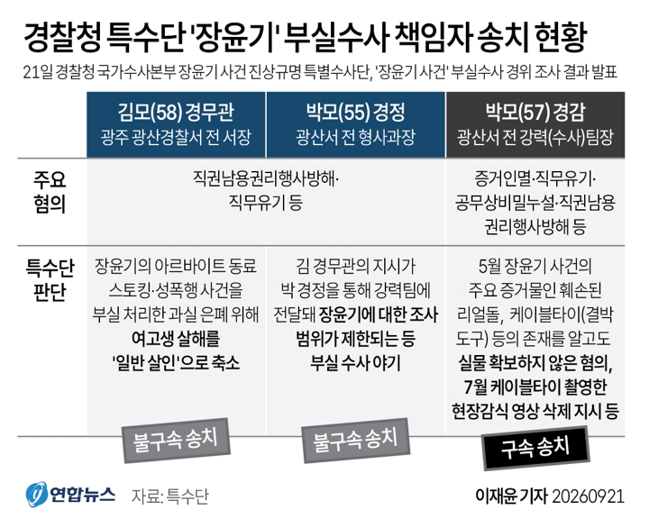
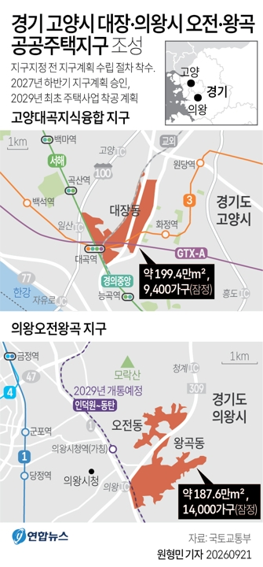
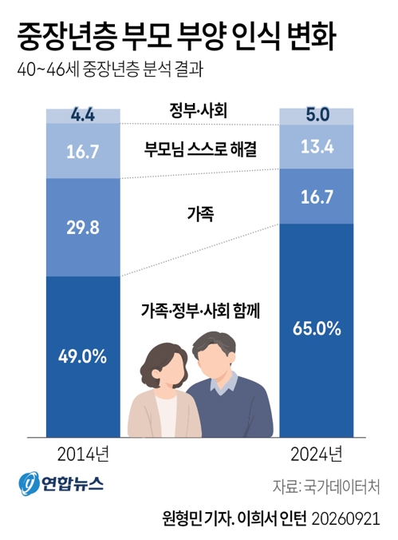
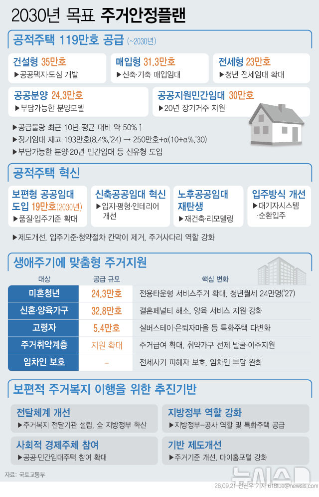
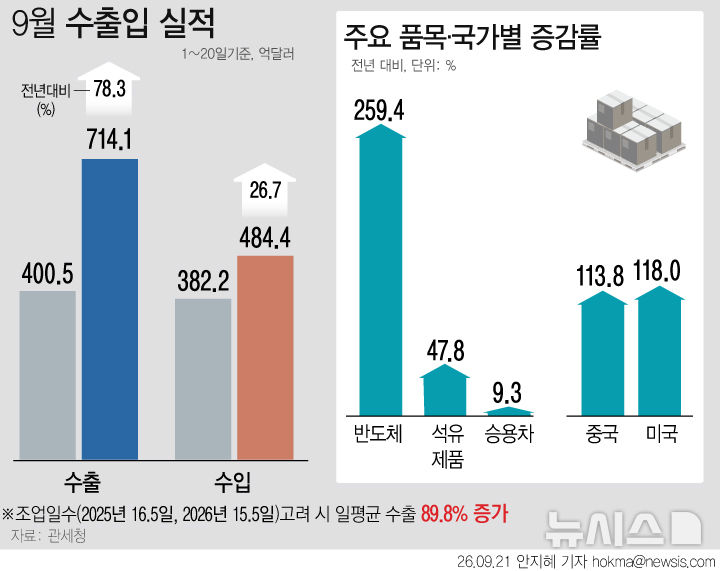
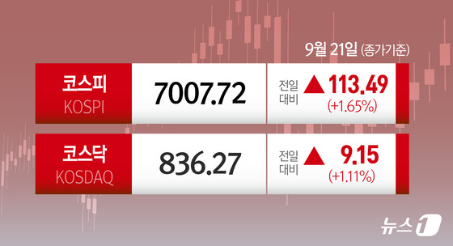
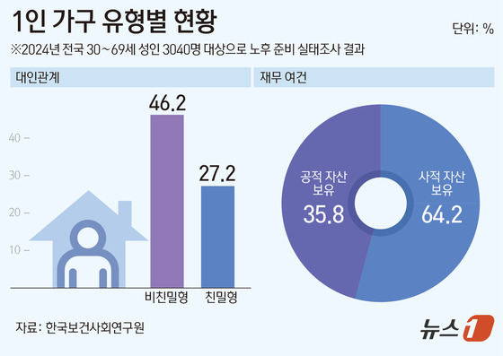
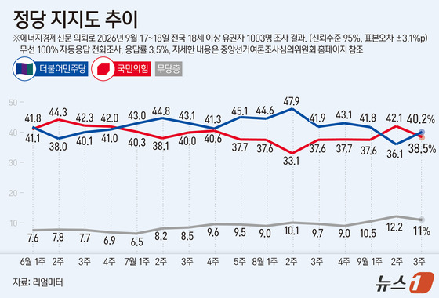

9/22(화) · 기준 2026-09-21 22:00 ~ 2026-09-22 06:00
엑셀 다운로드
"이미지 다운로드"를 누르거나, 이미지를 길게 눌러 저장한 뒤 카톡으로 보내세요.









![[연합뉴스] 2026 아이치·나고야 아시안게임 메달리스트(21일)](images/graphics/연합뉴스_01.jpg)
![[연합뉴스] 2026 아이치·나고야 아시안게임 국가별 메달 현황(21일)](images/graphics/연합뉴스_02.jpg)
![[연합뉴스] DMZ 수색 작전 중 폭발 사고 발생](images/graphics/연합뉴스_03.jpg)
![[연합뉴스] '계엄 가담' 군지휘관들 1심 선고](images/graphics/연합뉴스_04.jpg)
![[뉴스1] [그래픽] 2026 아이치·나고야 아시안 게임 오늘의 메달리스트(21일)](images/graphics/뉴스1_10.jpg)
![[뉴스1] [그래픽] 2026 아이치·나고야 아시안 게임 남자 50m 자유형 금메달 - 김영범](images/graphics/뉴스1_11.jpg)
![[뉴스1] [그래픽] '계엄 가담' 장성들 1심 중형 선고](images/graphics/뉴스1_12.jpg)